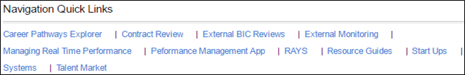

- Contract Review – Avg. Days Pending Approval & Avg. Days Pending Performance Confirmation
- Managing Real Time Performance - Enrollments & Exits, Placements & Retention
- Performance Mgmt. App - RAYS Surveys Month, ResCare Academy Use, Completed Resumes
- RAYS - RAYS Status is based upon RAYS % Positive Previous Month
- Resource Guides - Delivery Models, Policies, Procedures, forms, QA Plans, etc.
- Start Ups – A link to Startups not yet considered a Project
- Systems – Links to Resume Pro Data, QuickBase data, and Community Service Challenge
Created with the Personal Edition of HelpNDoc: Free help authoring tool